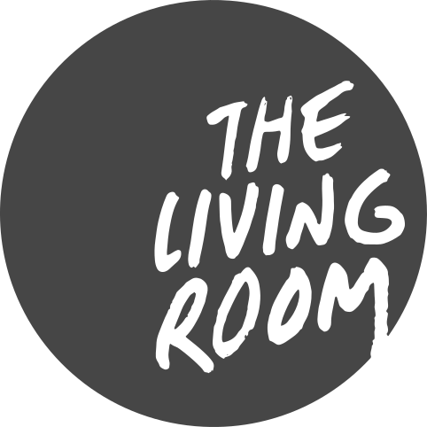

Choose A Ministry Area

Waumba Land
Sunday preschool environment for children ages six weeks to four years
UpStreet
Sunday environment for elementary-aged kids
KidStuf
Family experience for elementary-aged kids and their parents
Transit
Sunday environment for middle school students
InsideOut
Sunday environment for high school students

The Living Room
Non-Sunday environment for college-aged adults
Community Groups
Pursue authentic community and spiritual growth

Care Ministry
The Care Network is designed to help people proactively grow